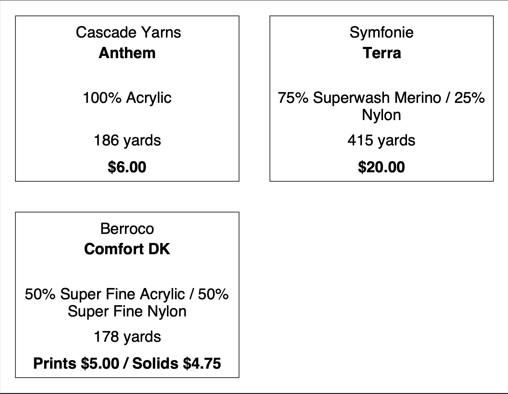

This takes a headerless .csv file and outputs a .pdf for item/price display.
The expected .csv format is:
<manufacturer>,<product>,(<fiber>,<fiber_pecentage>,)...<yardage>,(<price>[,<style>])...
For example:
Cascade Yarns,Anthem,Acrylic,100,186,6.00
Leading and trailing spaces will be removed. For yarns that are composed of multiple fibers, include additional <fiber>,<fiber_percentage> pairs as needed until the total percentage is 100. For example:
Symfonie,Terra,Superwash Merino,75,Nylon,25,415,20.00
If an m is appended to a <yardage> field, it will be interpreted as meters and rounded to the nearest yard for the label.
More than one <price> field can be added between <style> fields. This is when multiple SKUs should go on the same label. For example:
Berroco,Comfort DK,Super Fine Acrylic,50,Super Fine Nylon,50,178,5.00,Prints,4.75,SolidsThis .csv file generates the subsequent .pdf document:
Cascade Yarns,Anthem,Acrylic,100,170m,6.00
Symfonie,Terra,Superwash Merino,75,Nylon,25,415,20.00
Berroco,Comfort DK,Super Fine Acrylic,50,Super Fine Nylon,50,178,5.00,Prints,4.75,Solids

Download Example CSV Download Example PDF